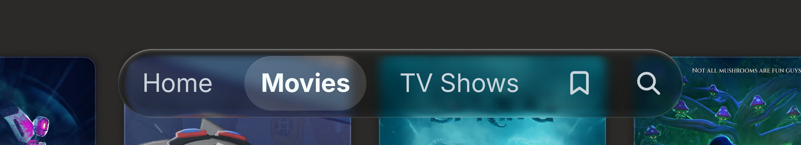

Glass panels over your own posters and artwork. Text is large enough to read from across the room, and the focused item is always obvious.

Glass look
Translucent panels over posters and backdrops.
60fps
A fast interface
Every screen drawn directly on the TV's GPU, even on a 2019 set.
Sign in on the TV
Scan a QR code with your phone, then pick your Plex Home profile. PIN-protected profiles are supported.
All your libraries
Your own libraries and the ones shared with you.
HEVC 10-bitTV decoder4K HDR
Video on the TV's own decoder
Up to 4K HDR with Dolby Vision and Atmos where your set supports them. Before you press Play, it shows whether a title plays directly or converts on your server.
ResumeChaptersAudio tracksSubtitlesSkip Intro
A full player
Styled and image subtitles you can retime, and progress that syncs back to Plex.
Internet · offTVPlex serverHome network · on
Works without internet
After the first sign-in, PlxNative talks to your Plex server directly. Your library keeps working on your home network when the internet is down.
Real captures from the app
Library
Every movie or show in one grid, sorted and filtered the way you choose.
Search
One query across every server you can reach, with results grouped by kind.
Works with your Plex
Your account, servers and profiles carry over from Plex.
Continue Watching
Recently Added
Collections
Trailers & extras
Cast & Crew
A–Z rail
Sort & filter
Plex Home profiles
Shared libraries
Search across servers
Subtitle search
Mark as Watched
Skip Intro
Skip Credits
Chapters
Normalize loudness
Styled subtitles
Image subtitles
Subtitle timing
Forced subtitles
Up Next
Language preferences
Remove from Deck
Built differently.
Browsing my Plex library on my 2019 LG TV felt slower than it needed to, even though the picture still looked great.
I wanted an interface that felt quick under the remote and enjoyable to spend time in. PlxNative takes a different route: it is written in Rust, and video goes to the TV's own decoder. I use it every day to watch things off my server in the next room.
Most TV apps run inside a browser. PlxNative doesn't.
Start with a regular LG webOS TV, or use your existing Homebrew Channel setup.
Developer Mode is LG's official feature
First-time installation
Developer Mode
Use your computer to install PlxNative through LG's Developer Mode.
Renew the Developer Mode session before it expires and your apps stay. If it lapses, LG removes the apps installed through it and you install again. How to renew
Not available. LG’s standard store process is Web-only, so a native app like PlxNative can’t go through it. I’ve asked LG whether any other route exists. Full story and updates →
Compatibility notes
LG webOS
Needs webOS 4.0 or newer. Compatibility can vary by TV model.
Plex
Needs a Plex account and a Plex Media Server.
Playback
PlxNative uses the codecs your television lists and falls back to Plex transcoding when needed.
Your library data never reaches me. Crash reports and usage analytics are off until you turn them on. No title, search term, subtitle line, server name or address appears in any report.
Yes. PlxNative is an unofficial, open-source Plex client for LG webOS TVs (webOS 4.0 and newer). It connects to your own Plex Media Server and runs as a native app, not a web page.
How do I install PlxNative on an LG webOS TV?
Install PlxNative from your computer through LG Developer Mode, or open Homebrew Channel on your TV and install it from the catalogue. The step-by-step guide covers both.
Does PlxNative need a rooted TV?
No. Developer Mode installation works on a regular LG webOS TV. Homebrew Channel is optional and only needed for catalogue installs and updates.
Does it work with a free Plex server?
Yes. PlxNative works with free Plex servers. You need a Plex account and a Plex Media Server.
Does it play music or Live TV?
No. PlxNative plays movies and TV shows. There is no music, photos or Live TV.
Is PlxNative made by Plex or LG?
No. It is an independent, unofficial project and is not affiliated with or endorsed by Plex GmbH or LG Electronics.
PlxNative is free and open source. Support helps keep it going.